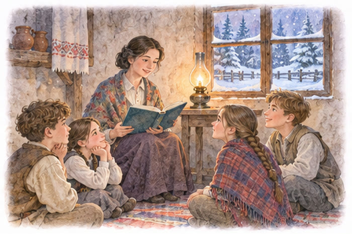

Listen to the text
Speed:

My great-grandmother Olena is ninety-one. When I complain that I have to read for school, she tells me a story. "When I was a girl, there was a war, and then hard years after it. We had almost nothing. But in our village there was one teacher, Mr Hryhorii, who had saved a box of books. Forty-two books. He had hidden them in the ground and dug them out later. Every evening in winter the children came to his house. There was only one lamp. He read to us for an hour. Fairy tales, poems, adventures about brave captains and distant islands. We sat on the floor, close to each other. It was cold, but we didn't feel it. I had never seen the sea. But in those books I sailed across oceans. I had only one dress. But in those books I was a princess, a traveller and a doctor. When I learned to read myself, he let me take one book home for a week. I carried it under my coat, so that the snow wouldn't touch it. I washed my hands before I opened it. That teacher changed my life. I became a teacher too, because of him. I taught children to read for forty years." She always finishes the same way. "A book is a friend that never leaves you. People go away. Houses fall down. But what you have read stays inside you, and nobody can take it." Then she looks at my phone and smiles. "And your friend there? Will it stay with you for eighty years?" I usually go and open a book after that.
Tap any sentence to hear it again.
Сподобалось? На сайті ще більше матеріалів для вчителів!
Reader, презентації, ігри, діагностичні та контрольні роботи до підручників 1-11 класів.
Перейти на сайт materials.allaenglish.com